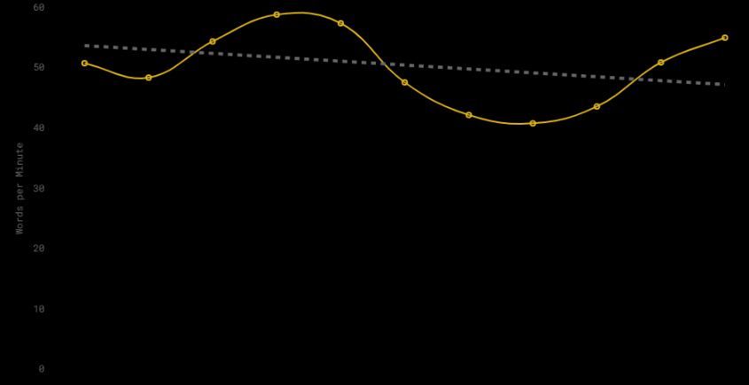
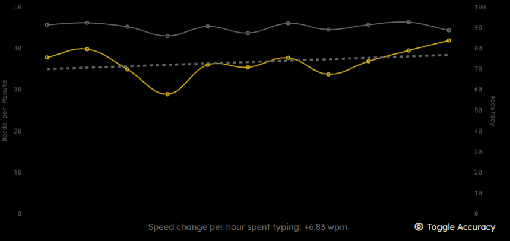
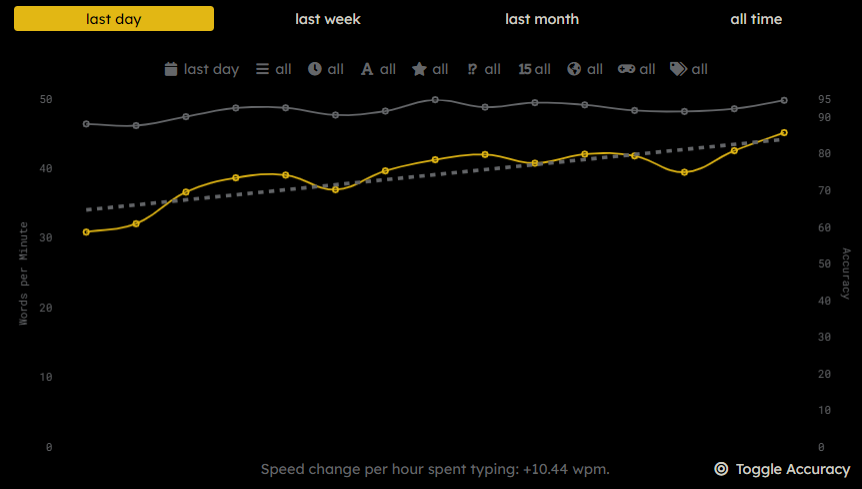
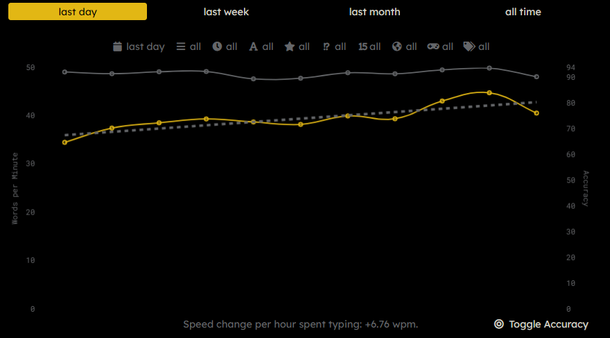
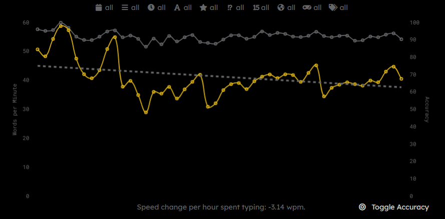

Table of Contents
Python Drawing AppTop
We had to use what we learned in Python to make a drawing App. You can select what color you want to draw with, change thw dith of the pencil, create lines, circle, stamps, stars with a varying number of points, undo your work, and clear the screen.
Typing Genius HourTop
Because on each Friday of distance learning we had only a 30 minute video call but had assignments for other classes, our assignment each friday was to work on something called a Genius Hour. We chose something to work on each friday until the end of the semester and what I chose was typing. I decided to use Moa> because it was the only typing program I was familiar with.
My main goal was too see how fast I could go while only looking at the keyboard when absolutely necessary. This first week I wasn't really worried about that and just set a baseline to see the max speed I could type.
Here I just started to slow my roll and focus less on raw speed and more on accuracy and looking at the keyboard less. This week wasn't focused on anything, I was just getting more familiar with typing here and not trying to go the absolute max speed.
Same thing as before, just slowly starting to take my eyes off the keyboard and worrying less about speed. At this point I've been only looking at the keyboard for charachters with locations I'm unfamiliar with their locations of, but you can't see it because there is no metric in monkey-type for that yet.
This last week in rel\ally when I kicked into full gear of only looking at the keyboard when absolutley necessary. I only did it when I kept making mistakes many times over trying to progress. I'm quite happy with my times for this week even if they're not great.
This is what the graph over all the weeks looks like